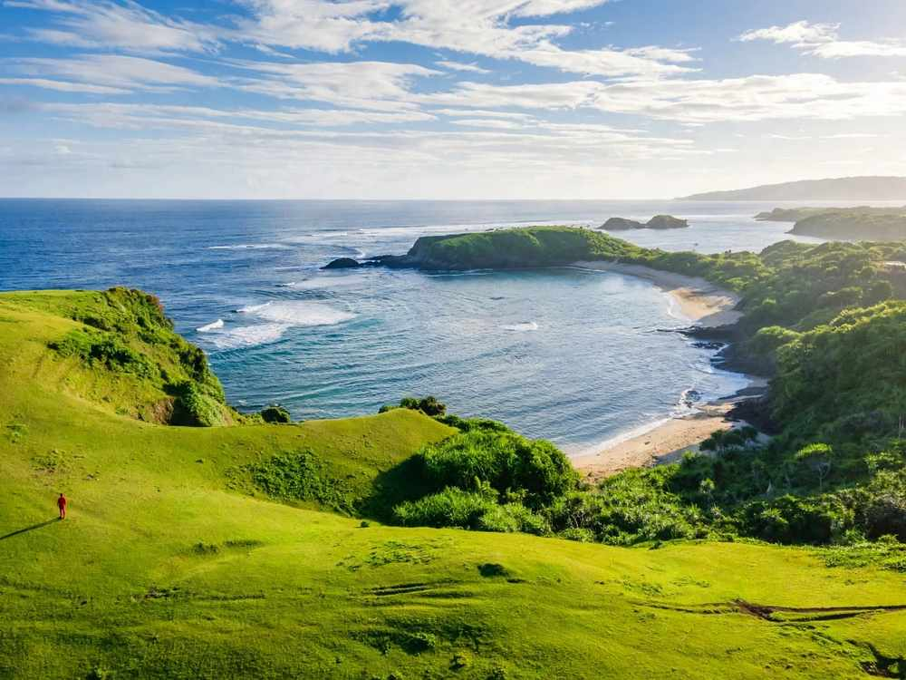

Catanduanes sits off the eastern edge of the Bicol Region, with nothing between its east coast and the open Pacific. That exposure explains most of what makes the island worth the trip. The cliffs at Binurong Point catch the full sweep of the ocean, Puraran Beach gets swells strong enough to draw surfers from abroad, and the hills inland stay green for most of the year.
It also explains the catch. The same weather that shapes the coast can cancel ferries and close trails, and the island is bigger than it looks on a map. Locals call it the Happy Island, and a trip here goes best when you plan around distance and sky before you plan around photos.
This guide is written for a first visit. It covers which places deserve your time, how to reach the island by plane or by bus and ferry, where to base yourself, three ready-made itineraries, and a realistic daily budget.

Catanduanes at a glance
- Where: Bicol Region, an island province facing the Philippine Sea
- Gateway town: Virac, the capital, with the airport and a ferry port
- Getting there: fly into Virac, or bus to Tabaco City in Albay and ferry to Virac or San Andres
- Top sights: Binurong Point, Puraran Beach, Balacay Point, Maribina Falls, Cagnipa Rolling Hills
- Ideal length: four to five days; three days covers the south and east only
- Driest stretch for sightseeing: roughly November to May, though rain can still come
The Places Worth Building a Trip Around
The island's main sights cluster in three areas. Baras on the east coast has the cliffs and the surf. Bato and Virac in the south have the waterfalls, the old church and the easiest beaches. Pandan in the far north has the rolling hills and the lagoon. Group your days by area and you will spend more time outside and less time in a van.
Binurong Point, Baras
If you only see one place in Catanduanes, make it this one. A short trek from the jump-off point leads through grass and patches of mud before the land opens up onto high pasture that ends in sheer drops to the sea. People compare it to Batanes, and the resemblance is real, though Binurong feels wilder and more tropical.
Go at sunrise if you can. The air is cooler, the light is gentle on the hills, and you will have the trail mostly to yourself. Budget two to three hours for the walk, photos and the return. Hire a local guide at the jump-off, wear shoes with real grip, and keep well back from the edges. After rain, the clay turns slick and the grass hides uneven ground.
Puraran Beach, Baras
Puraran made the island's name among surfers. Its reef break, known as the Majestic Wave, can throw hollow, fast sections when a proper swell arrives, and it rewards experience. It is not a beginner wave on most days.
Non-surfers still have reasons to come. The beach has golden sand and dark rock, and watching a good set roll in from the shore is a show in itself. If you want to try surfing, ask the local instructors where conditions suit a first lesson, and confirm board rental before you arrive. Some days the sea is flat, so leave room in your plans.
Swell tends to peak in a different window from beach season. Wave records for 2022 to 2024 show the strongest average swell in January and February, with November and December also promising. Treat that as a pattern, not a promise for any particular week.
Balacay Point, Baras
Balacay is the gentler of the two Baras viewpoints. You get raised grassy ground and a long look down the coast toward Puraran without a real hike. It fits neatly at the end of a Binurong and Puraran day, especially in late afternoon when the sun drops behind you and lights up the water.
Maribina Falls and the Bato coast
Inland from Bato, Maribina Falls spills over layered rock into a set of shallow pools. It is the easiest waterfall on the island to reach, which makes it popular with families and groups on weekends. Swim only in the marked areas, and skip the water entirely if it is raining hard or the flow looks brown and fast.
Bato has more to pair with it. The old stone church in town is one of the oldest in the province and worth a short stop. Further along the coast, Bote Lighthouse needs a walk to reach, and nearby Sakahon Beach is a quieter stretch of shore. In the Carorian area, the Poseidon Rock Formation has odd shapes and tide pools that are worth a look only when the sea is calm, since waves can wash right over the rocks.
Cagnipa Rolling Hills and Tuwad-Tuwadan Lagoon, Pandan
The north is where the island feels most remote. In Pandan, the Cagnipa hills roll down toward the Pacific in folds of short grass, with coves and rocky shoreline below. Cagnipa Cove sits close by for a swim when the water is calm.
Tuwad-Tuwadan Blue Lagoon is a pool of blue-green water ringed by rock, reached by a rough scramble over uneven ground. It photographs beautifully, but depth, current and tide change, so only swim or jump if a local guide says it is safe that day. Pandan is a long drive from Virac, so give the north its own day and, ideally, a night.
Waterfalls and caves for a longer stay
With extra days, look into Nahulugan Falls in Gigmoto and Bahaw Falls, both surrounded by thick greenery and both better visited with local advice on trail and water conditions. Luyang Cave Park in San Andres adds a cave to the mix if you are passing through the west. Ask at your guesthouse whether each is open and whether you need a guide.
Which Beach Suits You
Not every beach here is for swimming. Some are best watched from the sand, others are built for a lazy afternoon.
- Puraran, BarasSurf, rock-lined sand and big ocean views. Swim only where locals say the water is calm.
- Cagnipa Cove, PandanQuiet water and very little development. Snorkelling is possible on calm days.
- Twin Rock, ViracA resort beach with two offshore rocks and easy access from town. Good for a half day.
- Mamangal, Batag and MarilimaSimple beaches around Virac for a short trip. Check facilities before bringing kids.
- Sakahon, BatoMore for scenery than swimming. Pair it with Bote Lighthouse.
On a first trip, Puraran, Twin Rock and Cagnipa Cove give you three very different days by the sea.
When to Go
Catanduanes takes the full force of Pacific weather, and the island has a long record of strong typhoons. Weather is part of the itinerary here, not a footnote.
Sightseeing
November to May
The better bet for hikes, waterfalls and beach days. Rain still happens, but a whole trip is less likely to wash out. Check the forecast a few days before you fly or sail.
Surfing
January and February
Average swell at Puraran runs strongest in these months, with November and December close behind. Surfers should pick dates by the swell, not by the tourist calendar.
Plan with care
June to October
The southwest monsoon and passing storms bring rough seas and delayed ferries. Not every day is wet, but keep a spare day and avoid tight onward connections.
Whatever the month, follow PAGASA bulletins, check ferry and airline advisories before leaving, and respect closures at beaches and viewpoints when officials put them in place.
How to Get to Catanduanes
There are two ways in: a flight to Virac, or a long bus ride to Tabaco City in Albay followed by a ferry. Which one suits you depends on time, budget and whether you are bringing a vehicle.
Fastest
Fly Manila to Virac
Cebu Pacific has flown this route in about an hour to an hour and 15 minutes. Schedules change, so check your dates before booking anything else.
Overland
Bus to Tabaco, then ferry
Manila to Tabaco runs around 10 to 12 hours by bus. The sea crossing adds roughly 2.5 to 4 hours, depending on the boat and port.
Already in Bicol
Legazpi to Tabaco Port
A short road trip north to Tabaco, then the same ferry to Virac or San Andres.
Coming from the Visayas, do not count on a direct flight to Virac. Look for a connection through Manila, or fly into the Bicol mainland and take the Tabaco ferry. If you are already exploring Albay, the Mayon Volcano and Cagsawa Ruins make an easy stop on the way to the port.
Virac or San Andres?
Ferries from Tabaco run to two ports, and the right one depends on where you are staying. Virac puts you close to Bato, Baras and Puraran, so it suits most first trips. San Andres, served by Regina Shipping Lines, is handier for the west and north, including Pandan. Pick the port that fits your route, not the cheapest ticket, because the wrong one can add hours on the road. RoRo boats carry cars and motorbikes, subject to space and the vessel. Confirm fares and departure times with the operator or the San Andres municipal page shortly before you travel.
Getting Around the Island
Sights are spread across several towns and public transport does not run often enough for a packed day. Mix and match based on your group.
- TricycleFine for short hops around Virac. For a special trip, agree on the stops, waiting time and total fare before you get in.
- Jeepney or busThe cheapest way between towns, but trips are limited. Ask about the last ride back before you head out.
- Rented motorbikeFlexible and cheap for one or two people, if you hold a licence and ride well. Roads can be narrow, winding and slippery after rain. Wear a helmet and avoid unfamiliar roads after dark.
- Private van or carThe easiest option for families and short trips. Get a quote that spells out fuel, driver, parking, waiting time and entrance fees.
On a three-day trip, a hired van for the Baras and Bato day saves the most time. Use tricycles for everything around Virac.
Where to Stay
Virac is the easiest base for a first visit. It has the most rooms, restaurants and shops, plus the airport. Surfers should stay near Puraran so they can check the waves every morning without a commute. Baras works well if a sunrise at Binurong is the priority, and Pandan makes sense for at least one night if you are heading north.
For a four or five-day trip, switching beds once, Virac first and then Baras or Pandan, usually beats driving back to the capital every evening. Before booking, ask whether rooms are fan or air-conditioned, whether meals are served, whether the owners can arrange transport, and how the road holds up in heavy rain.
Three Itineraries to Choose From
- Day 1Virac and Bato
Arrive and check in, then Bato Church, Maribina Falls, and Sakahon Beach or Bote Lighthouse if time and access allow. Sleep in Virac.
- Day 2Baras coast
Binurong Point at dawn, a late breakfast, then Puraran for the afternoon or a surf session. Finish at Balacay Point. Stay near Puraran or head back.
- Day 3Easy last day
Twin Rock Beach in the morning, pasalubong shopping in Virac, then the airport or port.
Four days: Spend day one settling into Virac and Twin Rock. On day two, do Bato in the morning and move to Baras. Give day three entirely to Binurong at sunrise, Puraran and Balacay, and return to Virac on day four with time for anything you missed.
Five days: Follow the four-day plan, but add a day in Pandan for Cagnipa Rolling Hills, Cagnipa Cove and Tuwad-Tuwadan, and sleep in the north instead of driving back the same night.
What a Trip Costs
Catanduanes can be cheap if you use buses, share rides and stay in guesthouses. Costs climb with private vans, beachfront resorts and guided activities. The figures below are planning ranges per person per day, not quotes, and they leave out flights and ferries.
A solo traveller on a four-day budget trip might spend around ₱5,700: about ₱2,100 for three nights, ₱1,600 for food, ₱1,000 for local transport, ₱500 for fees and ₱500 for extras. Surf lessons, private tours and the trip to the island come on top. Travelling as a group and splitting a van is the easiest way to bring the number down.
What to Eat
The island cooks like the rest of Bicol, with coconut milk, chili and fresh seafood at the centre. If you are passing through Albay on the way, a Bicol food trip in Legazpi is a good warm-up.
Before You Go
Small things that matter
- Withdraw cash in ViracSmall eateries, drivers and attractions often take cash only, and ATMs thin out away from the capital.
- Download offline mapsSignal drops in rural areas. Save your guesthouse, the port, the airport and each stop.
- Pack two kinds of footwearGrippy shoes for Binurong, waterfalls and caves, and sandals for the beach. Reef shoes help on rocks but are not armour.
- Bring rain gearA light jacket and a dry bag for your phone, even in the drier months.
- Leave a buffer before flightsFerries and flights shift with the weather. Do not book a ferry and an onward flight on the same tight day.
- Leave it as you found itCarry out your trash, stay on trails, keep off coral and rock formations, and follow local swimming and surfing rules.
Is Catanduanes Worth It?
Yes, if you like your beaches uncrowded and do not mind some effort to reach them. You get cliffs, surf, waterfalls and hills on one island, with few big resorts in the way. The trade-off is time: long drives, limited transport and weather that can shuffle your plans. Give it four or five days and the island stops feeling like a logistics puzzle. For a first trip, put Binurong Point, Puraran, Balacay, Maribina Falls and Bato Church at the top of the list, then head north to Pandan if you have the days.
If big waves are what draw you east, Calicoan Island in Eastern Samar is another Pacific-facing surf spot worth adding to your list.
Frequently Asked Questions
How many days do you need in Catanduanes?
Three days covers Virac, Bato and Baras. Plan four to five days if you also want Pandan and the north.
Can you do Binurong Point and Puraran Beach in one day?
Yes. Both are in Baras. Hike Binurong at sunrise, then spend the afternoon at Puraran and finish at Balacay Point.
Is Puraran good for beginner surfers?
Usually not. The Majestic Wave is powerful and best left to experienced surfers. Beginners should book a lesson and let the instructor choose the spot and the day.
Is there an airport in Catanduanes?
Yes, Virac Airport, with flights from Manila. Check the current schedule, since frequency changes.
Can you bring a car or motorbike?
Yes, on the RoRo ferries from Tabaco, depending on space and the vessel. Confirm the rate and requirements with the operator.
Is Catanduanes good for families?
Yes, with some care. Twin Rock and Maribina Falls are easy, while cliff viewpoints, muddy trails and strong surf need closer supervision.

Comments
No comments yet. Been here recently? Share a tip or ask a question.
Leave a Reply